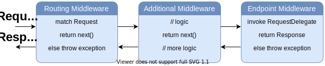

Middleware
Middlewares are software components that are chained into the application pipeline to handle Http requests and responses, Each middleware component in the request pipeline is responsible for invoking the next component called Request Delegate, till reach the endpoint of the application, and can perform work before and after the next component in the pipeline or short-circuiting the chain in case of filtring not allowed requests.
Creating middleware
Middlewares are configured using use methods on the IApplicationBuilder type that is passed into the configure(IApplicationBuilder $app) method in the startup class, A middleware can be specified in-line as an anonymous method, or it can be defined in a reusable class implement IMiddleware class. These reusable classes are middleware, or middleware components. Each middleware component in the request pipeline is responsible for invoking the next component in the pipeline, or short-circuiting the chain if appropriate.
<?php
use Artister\DevNet\Dependency\IServiceCollection;
use Artister\DevNet\Dispatcher\IApplicationBuilder;
use Artister\DevNet\Extensions\DependencyExtensions;
use Artister\DevNet\Extensions\HostingExtensions;
use Artister\System\Web\Http\HttpContext;
use Artister\System\Process\Task;
class Startup
{
...
public function configure(IApplicationBuilder $app)
{
$app->use(function(HttpContext $context, RequestDelegate $next) : Task {
// can short-circuiting the pipeline if does not fulfil the condition.
if (!$context->User)
{
return Task::completedTask();
}
// can do some work befor the next delegate.
$next();
// can do some work after the next delegate.
});
}
}
Middleware class
You can create a Middleware in separated class implements IMiddleware interface, and then call it by the use method of IApplicationBuilder instance, inside configure methode of Startup class:
<?php
namespace Application\Middlewares;
use Artister\DevNet\Dispatcher\IMiddleware;
use Artister\DevNet\Dispatcher\RequestDelegate;
use Artister\DevNet\Http\HttpContext;
use Artister\System\Process\Task;
class MyMiddleware implements IMiddleware
{
public function __invoke(HttpContext $context, RequestDelegate $next) : Task
{
// can short-circuiting the pipeline if does not fulfil the condition.
if (!$context->User)
{
return Task::completedTask();
}
// can do some work befor the next delegate.
$next();
// can do some work after the next delegate.
}
}
Using the MyMiddleware in the configuration:
<?php
use Artister\DevNet\Dependency\IServiceCollection;
use Artister\DevNet\Dispatcher\IApplicationBuilder;
use Artister\DevNet\Extensions\DependencyExtensions;
use Artister\DevNet\Extensions\HostingExtensions;
use Application\Middlewares\MyMiddleware;
class Startup
{
...
public function configure(IApplicationBuilder $app)
{
$app->use(MyMiddleware::class);
}
}
Built-in middleware
| Middleware | Discription |
|---|---|
| UseDeveloperExceptionHandler | add ExceptionHandler middleware to the pipeline |
| useRouter | add Router matcher middleware to the pipeline |
| useAuthentication | add Authentication middleware to the pipeline |
| useAuthorization | add Authorization middleware to the pipeline |
| UseEndpoint | add Endpoint dispatcher middleware to the pipeline |